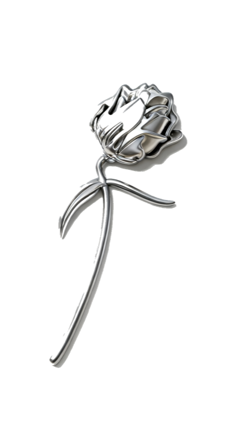
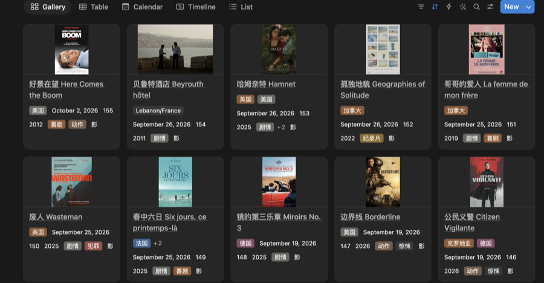
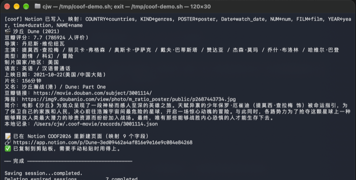

输入模糊片名，自动查豆瓣、传海报、写进 Notion。
需要 Tuna，并开启 设置 → 通用 → 允许 tuna:// 链接执行命令。
不用 Tuna 可直接跑脚本。
沙丘 2021 按年份消歧，dune 认英文原名，
matrix 找到《黑客帝国》。也可贴豆瓣链接或 id:3001114。
分数接近时列出候选并复制到剪贴板，补个年份再跑一次即可，不会随便挑一个。
豆瓣图床有防盗链，外链放进 Notion 会裂图。改为下载后上传，属性类型是
file。
条目标题做成指向豆瓣的超链接（等同于在 Notion 里按 ⌘K），点片名直接跳转。
字段跟着你的数据库走：NAME 写「中文名 外文名」，time
是分钟数，Date 是观看日期，NUM 取最大值 +1。
默认写 COOF2026。换一次就记住，之后不用再选。


两个脚本放进 ~/Library/Scripts，Tuna 会自动发现：
| 脚本 | Tuna 里的名字 | 作用 |
|---|---|---|
coof-movie.py | 记录电影 | 片名 → 豆瓣 → Notion |
coof-notion-page.py | 记录到哪个页面 | 更换目标数据库 |
用法是「片名在前，脚本在后」：
1. 打开 Tuna，按 . 进 Text Mode，输入片名 2. Tab 到动作栏，选「Send to Script」 3. Tab 到目标栏，选「记录电影」，回车
也可以先复制片名，再对「记录电影」直接回车。
不要把「记录电影」当第一栏再选 Run with Input：那个动作的第三栏 是选择器，不接受现场打的字。
只要有 Python 3（macOS 自带）：
chmod +x coof-movie.py coof-notion-page.py ./coof-movie.py 沙丘 2021 # 查 + 写库 ./coof-movie.py --no-notion 沙丘 # 只查，不写库 ./coof-movie.py --no-open 沙丘 # 不打开浏览器 ./coof-movie.py --link-titles 148-155 # 给已有条目补标题链接 ./coof-notion-page.py # 看/换目标页面
首次使用先接上 Notion：
./coof-movie.py --set-notion-token <token>
./coof-movie.py --notion-schema # 确认能看到字段
映射在运行时读取你的数据库结构，按属性名匹配。
| Notion 属性 | 写入内容 |
|---|---|
NAME | 「中文名 外文名」，带豆瓣超链接 |
FILM | 固定「影」（剧集写「剧」） |
YEAR | 上映年份 |
time | 片长分钟数 |
Date | 观看日期 = 运行当天 |
NUM | 递增序号 |
COUNTRY / KIND | 制片国家 / 类型 |
POSTER | 豆瓣海报，下载后上传 |
豆瓣没有公开 API，走的是非官方接口。短时间内连续请求十来次会被限流（返回空数组）， 通常 1–2 分钟恢复。脚本已做请求间隔、失败重试、命中缓存不重复请求。
豆瓣改版可能让抓取失效；失效时会明确报错，不会静默写错数据。
目前不去重：同一部片连跑两次会有两条记录。